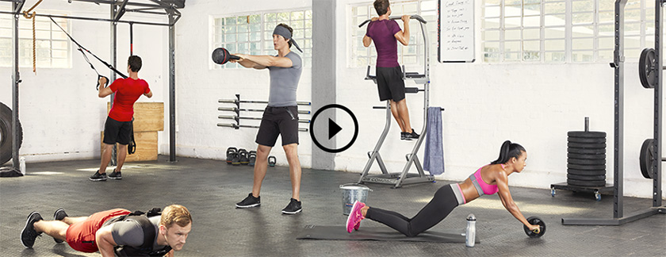
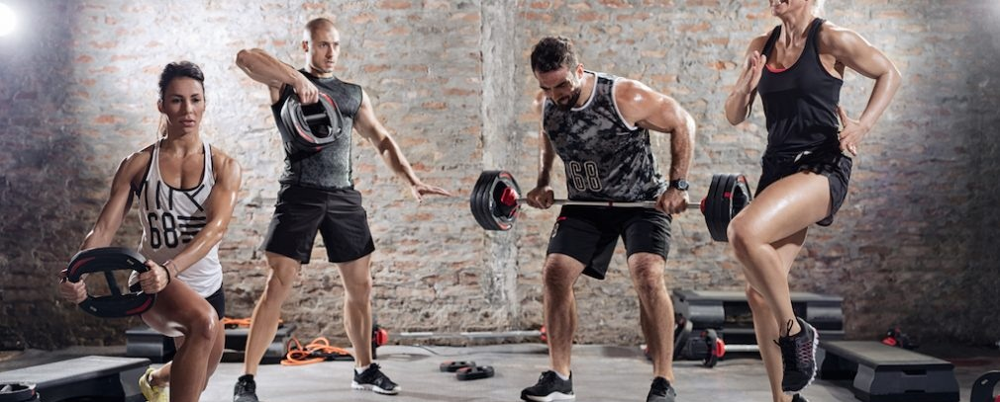
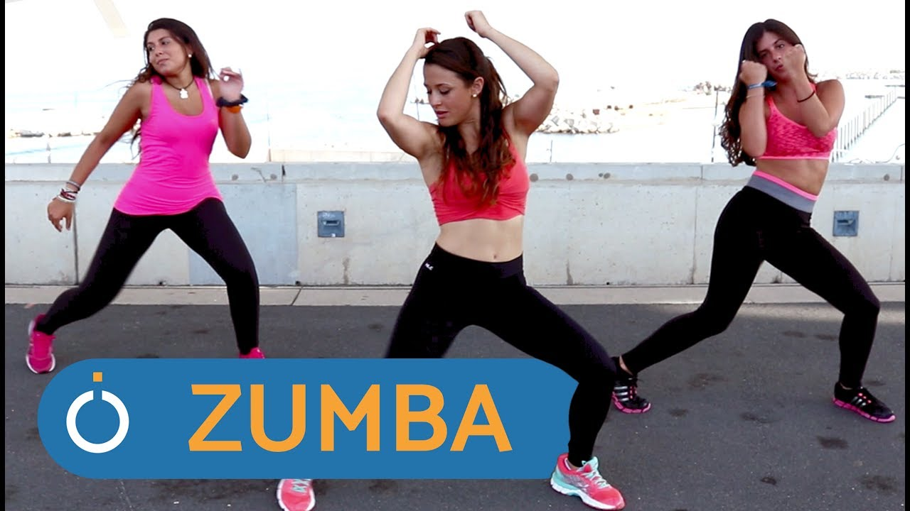
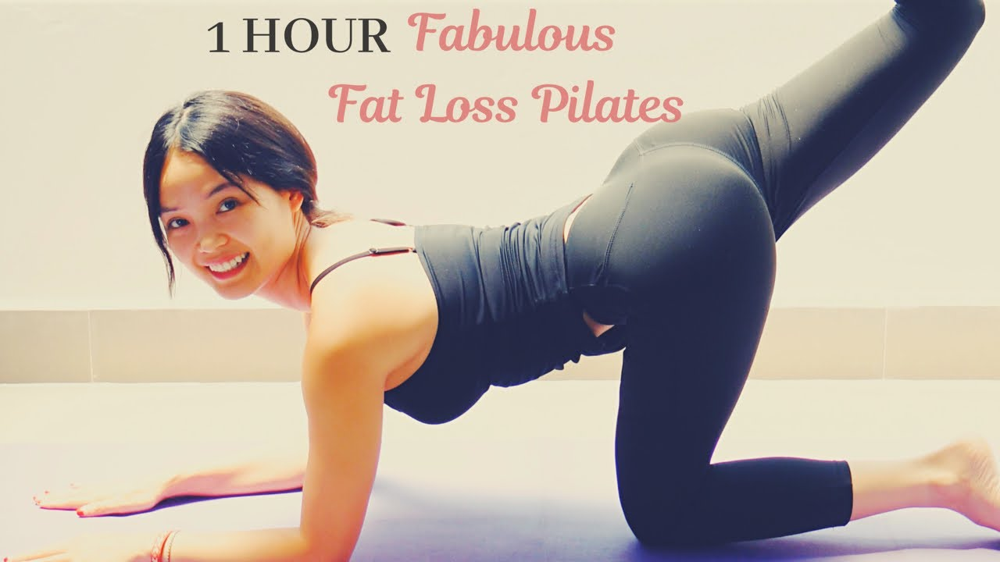
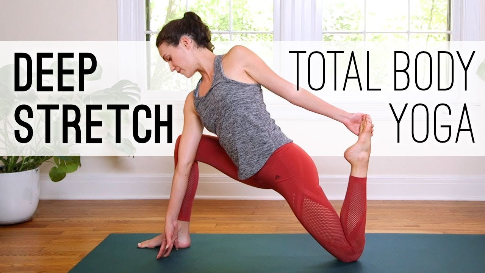

Cross gym trainings
Cross training
Cross training je sat vremena kvalitetnog treninga za angažovanje mišica celog tela. Reč je o fitnes programu koji predstavlja kombinaciju kardio vežbi i vežbi snage, koje dovode do poboljšanja motorike, fleksibilnosti, izgradnje i zategnutosti mišića kao i do sagorevanja masnih naslaga.
Saznaj više o programuCross conditioning
Cross conditioning treningom aktiviraju se mnogi mišići i zglobovi i stavljaju se u funkciju različitim delovima tela, što se postiže specifičnim kretanjem kod kog se telo savija u tri osnovne ravni: frontalnoj, transverzalnoj i sagitalnoj.
Saznaj više o programuCross box

Cross box počinje sa željom osobe da poboljša svoj stepen fitnesa, dok upoznaje osnovne osnovne sportske i borilne vežbe na svetu, Boxing. Cilj CrossBox-a je da uspostavi osnovnu smjernicu za praktikanta da održi vrhunski nivo fitnessa sa minimalnom opremom ili prostorom.
Saznaj više o programuZumba
Zumba je u plesu, zabavi i muzici ali je takođe i veoma pažljivo kreiran trening. Svaki pokret i promena ritma osmišljeni su tako da stekneš vrhunski izgled, formu i zdravlje. Zumba je naročito poznata po uspesima oblikovanja delova tela kao sto su stomak i zadnjica.
Saznaj više o programuPilates
Pilates je u poslednjih nekoliko godina jedan od najpopularnijih vidova rekreacije kako u svetu tako i kod nas. Razlog tome je sto vežbanje pilatesa osim fizičke aktivnosti, telu daje i neophodno opuštanje i uspostavlja ravnotezu između fizičkog i mentalnog.
Saznaj više o programuYoga
Hatha yoga je jedna od najpoznatijih i najrasprostranjenijih vrsta joge na svetu. Joga nije samo fizičko vežbanje, već učenje uspostavljanja stanja potpunog mira i opuštenosti. Usmerena je na upostavljanje harmonije uma, tela i duha, odnosno postizanje stanja opuštenosti i sreće.
Saznaj više o programu
PREPORUČUJE SE:
- Vežbačima koji vole mirniji trening
- Vežbačima koji imaju sedentarne poslove
- Vežbačima koji imaju probleme sa postiralnim statusom
NE PREPORUČUJE SE:
- Hroničnim bolesnicima
- Osobama koje imaju problem sa hipertenzijom, astmom
- Srčanim bolesnicima
Ostvari ravnotežu tela i uma.
Pilatesom dobijaš u isto vreme fizičku i mentalnu stabilnost, snagu, opuštenost i gipkost. Izgradićeš svoje telo na jedan potpuno drugačiji način.
Bez agresivnih i napornih vežbi pilates ti donosi formu koja će drugima biti uzor.
Imaćeš bolje držanje i opšti osećaj ravnoteže u životu.
Pređi preko crte i uđi u novi svet.
Više o pilatesu:
Priča o pilatesu je priča o uspehu uprkos teškim okolnostima. Tvorac ovog sistema vežbi je Jozef Pilates – vrhunski atleta. Više nego običan sportista vodio se antičkim idealom zdravog tela i duha. Uspešno se bavio skijanjem, boksom, ronjenjem i mnogim drugim sportovima.
Ono što je fascinantno je da je Jozef u detinjstvu bio veoma krhkog zdravlja. Bolovao je od astme, rahitisa i reumatske groznice. Bio je nepokolebljiv u tome da prevaziđe posledice koje je takvo detinjstvo ostavilo na njega a takvih posledica je bilo mnogo.
Bio je čovek širokih interesovanja i poznavalac nauke. Upućen u načine vežbanja starog Rima i Grčke jednako je poznavao i istočnjačke sisteme treninga kao što su joga i zen. Iz svog bogatog znanja i iskustva stvorio je sistem vežbanja kasnije poznat kao pilates.
Za vreme rata bio je zatočen u logoru ali telo i karakter koje je izgradio vežbanjem istrajali su. U logoru je svojim vežbama uspešno pomagao bolesnima i ranjenima da se oporave od povreda, povrate fizičku i mentalnu snagu.
Sve ovo samo je jedan mali deo priče o treningu i njegovom tvorcu. Drugi i najvažniji deo nalazi se u samom vežbanju.
Dođi i uzmi ga za sebe.

PREPORUČUJE SE:
- Vežbačima koji vole da vežbaju u grupi i uz muziku
- Vežbačima koji vole dinamičan trening
- Vežbačima koji imaju višak kilograma
- Vežbačima koji žele da povećaju tonus mišića i da povrate i održe kondiciju
- Podjednako je dobar i za iskusne vežbače i za početnike
NE PREPORUČUJE SE:
- Hroničnim bolesnicima
- Osobama koje imaju problem sa hipertenzijom, astmom
- Srčanim bolesnicima
Zaboravi na trening i dođi na žurku!
Uz ritam zumbe do gipkog i izvajanog tela! Zumba je u plesu, zabavi i muzici ali je takođe i veoma pažljivo kreiran trening. Svaki pokret i promena ritma osmišljeni su tako da stekneš vrhunski izgled, formu i zdravlje. Zumba je naročito poznata po uspesima oblikovanja delova tela koji važe kao najteži za postizanje željenog izgleda: butina, stomaka i zadnjice.
Sagori kalorije zabavom i plesom!
Više o zumbi i zumbanju:
Zumba je unela revoluciju u svet fitnesa. Dobar izgled i zdravlje uvek su bili (i još uvek jesu) pitanje discipline, znanja i posvećenosti, a zumba je veliki deo tog puta učinila nalik igri. Ipak, to je samo jedan od razloga zbog kojih su zumba i zumbanje osvojili svet. Iako ćeš imati osećaj lakoće i zabave kao da se provodiš – iznenadiće te brzina sopstvenog progresa. Mešavina latino ritma i pokreta lakih za učenje angažovaće i oblikovati celo tvoje telo bez osećaja monotonije i napora. Danas u svetu fitnesa zumba je jednako poznata po uživanju kao i po vrhunskim rezultatima.
PREPORUČUJE SE:
- Svima koji žele da uspostave balans tela, uma i duha.
NE PREPORUČUJE SE:
- Svima se preporučuje.
Hatha yoga je jedna od najpoznatijih i najrasprostranjenijih vrsta joge na svetu. Joga nije samo fizičko vežbanje, već učenje pre svega kako da umirimo um i postignemo stanje potpunog mira i opuštenosti.
Usmerena je na upostavljanje harmonije uma, tela i duha, odnosno postizanje stanja opuštenosti, sreće i pozitivne energije.
Redovnim vežbanjem joge jačamo, zatežemo i oblikujemo telo, ali i otklanjamo napetosti nagomilane u telu i umu. Efekti joge su suptilni, ali redovnim vežbanjem postaju jači i trajni, odnosno postaju deo svakodnevnice i način funkcionisanja.
Bolja forma, više energije, osećanje sreće i spokojstva su zasigurno rezultati redovnog vežbanja ove discipline.
Dođite da zajedno pretvorimo napetost i stres u stanje mira i opuštenosti.